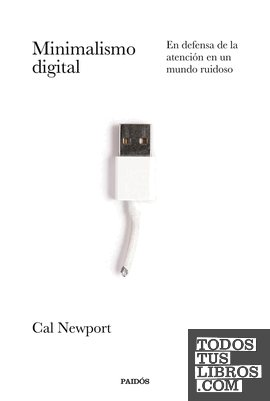

Libros de psicología digital y tecnología
Libros de psicología digital y tecnología en español: 13 libros completos para leer gratis aquí mismo y 14 fichas de títulos actuales.
CiberacosoPsicología de las redes socialesEconomía de la atenciónPersuasión digitalComparación social digitalInteligencia artificial y cogniciónUso problemático del móvilAtención y pantallasBienestar digitalHábitos digitalesSoledad y tecnologíaConducta en internetDesinhibición en líneaPsicología de la interacción humano-computadoraDiseño conductualAutoimagen en redes sociales
La prevención del acoso y ciberacoso a través de las clases de Educación FísicaEvangelio Caballero, Carlos; Saiz-González, Pablo; Fernández-Río, Javier; González-Víllora, Sixto
La prevención del acoso y ciberacoso a través de las clases de Educación FísicaEvangelio Caballero, Carlos; Saiz-González, Pablo; Fernández-Río, Javier; González-Víllora, SixtoManual Go-Byst! Un programa breve de sensibilización y movilización de espectadores frente al acoso sexual entre adolescentesSánchez Jiménez, Virginia; Rodríguez de Arriba, María Luisa; Muñoz Fernández, Noelia; Ortega Rivera, Francisco Javier; Durán Guerrero, Estrella; Moreno Albalat, María Isabel
Manual Go-Byst! Un programa breve de sensibilización y movilización de espectadores frente al acoso sexual entre adolescentesSánchez Jiménez, Virginia; Rodríguez de Arriba, María Luisa; Muñoz Fernández, Noelia; Ortega Rivera, Francisco Javier; Durán Guerrero, Estrella; Moreno Albalat, María IsabelCiberviolencia en las redes sociales: Experiencia y prácticas en la población juvenilLeón Mejía, Ana Cristina; Guzmán Ordaz, Raquel; Yurrebaso Macho, Amaia; García Valverde, Esther; Seixas Vicente, Isabel; García Alonso, Elena María; Picado Valverde, Eva María
Ciberviolencia en las redes sociales: Experiencia y prácticas en la población juvenilLeón Mejía, Ana Cristina; Guzmán Ordaz, Raquel; Yurrebaso Macho, Amaia; García Valverde, Esther; Seixas Vicente, Isabel; García Alonso, Elena María; Picado Valverde, Eva MaríaPrevención integral del ciberacoso y otros riesgos y violencias onlineAdrian Aguayo Llanos
Prevención integral del ciberacoso y otros riesgos y violencias onlineAdrian Aguayo LlanosSociedad digital. Razón y emociónCarlos Cantero Ojeda
Sociedad digital. Razón y emociónCarlos Cantero OjedaPrevención de situaciones de ciberacoso en la adolescenciaRodríguez Domínguez, Carmen; Martínez Pecino, Roberto; Durán Segura, Mercedes
Prevención de situaciones de ciberacoso en la adolescenciaRodríguez Domínguez, Carmen; Martínez Pecino, Roberto; Durán Segura, MercedesEl efecto smartphone: conectarse con sentidoManuel Armayones Ruiz
El efecto smartphone: conectarse con sentidoManuel Armayones RuizAcoso escolar y ciberacoso: Propuestas para la acciónOrjuela López, Liliana; Cabrera de los Santos Finalé, Belkis; Calmaestra Villén, Juan; Mora Merchán, Joaquín Antonio; Ortega Ruiz, Rosario
Acoso escolar y ciberacoso: Propuestas para la acciónOrjuela López, Liliana; Cabrera de los Santos Finalé, Belkis; Calmaestra Villén, Juan; Mora Merchán, Joaquín Antonio; Ortega Ruiz, RosarioCiberacoso y comportamiento suicida en la población adolescente: una revisión bibliográficaJiménez García, Irene; Borrallo Riego, Álvaro; Trigo Ruiz, Alba; Guerra Martín, María Dolores
Ciberacoso y comportamiento suicida en la población adolescente: una revisión bibliográficaJiménez García, Irene; Borrallo Riego, Álvaro; Trigo Ruiz, Alba; Guerra Martín, María DoloresÉtica e inteligencia artificial en evaluación psicológicaKrieger, Virginia; Magallón Neri, Ernesto Mijail; Amador, Juan Antonio
Ética e inteligencia artificial en evaluación psicológicaKrieger, Virginia; Magallón Neri, Ernesto Mijail; Amador, Juan AntonioCiberacoso, uso problemático de redes sociales virtuales e ideación suicida en adolescentesVarela-Garay, Rosa M.; Gálvez-Pichardo, Antonio; Callejas-Jerónimo, Juan E.; Musitu Ochoa, Gonzalo
Ciberacoso, uso problemático de redes sociales virtuales e ideación suicida en adolescentesVarela-Garay, Rosa M.; Gálvez-Pichardo, Antonio; Callejas-Jerónimo, Juan E.; Musitu Ochoa, GonzaloLa violencia en la realidad digital. Presencia y difusión en las redes sociales y dispositivos móvilesGonzález Fernández, Sara
La violencia en la realidad digital. Presencia y difusión en las redes sociales y dispositivos móvilesGonzález Fernández, SaraPsicología e internetAgnès Vayreda Duran, Miquel Domènech i Argemí
Psicología e internetAgnès Vayreda Duran, Miquel Domènech i ArgemíNexusYuval Noah Harari
NexusYuval Noah HarariEl valor de la atenciónJohann Hari
El valor de la atenciónJohann HariLa fábrica de cretinos digitalesMichel Desmurget
La fábrica de cretinos digitalesMichel DesmurgetEl siglo de la soledadNoreena Hertz
El siglo de la soledadNoreena HertzDiez razones para borrar tus redes sociales de inmediatoJaron Lanier
Diez razones para borrar tus redes sociales de inmediatoJaron LanierEn defensa de la conversaciónSherry Turkle
En defensa de la conversaciónSherry TurkleEducar en la realidadCatherine L'Ecuyer
Educar en la realidadCatherine L'EcuyerInfluencia. La psicología de la persuasiónRobert B. Cialdini
Influencia. La psicología de la persuasiónRobert B. CialdiniIrresistibleAdam Alter
IrresistibleAdam AlterLa generación ansiosaJonathan Haidt
La generación ansiosaJonathan HaidtLector, vuelve a casaMaryanne Wolf
Lector, vuelve a casaMaryanne WolfMinimalismo digitalCal Newport
Minimalismo digitalCal Newport
Superficiales. ¿Qué está haciendo Internet con nuestras mentes?Nicholas Carr
Superficiales. ¿Qué está haciendo Internet con nuestras mentes?Nicholas CarrIndistraíbleNir Eyal
IndistraíbleNir EyalTemas relacionados
¿Estás eligiendo carrera?
Haz gratis el test de orientación vocacional de AURZANE: intereses, aptitudes, autoconcepto y hábitos de estudio, con informe completo.